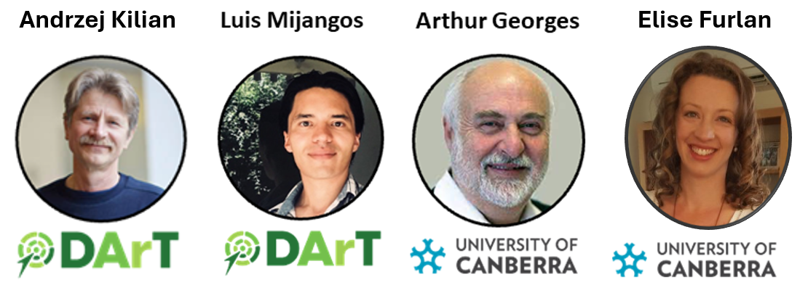

library(dartRverse)5 Assigning Individuals to Populations
Session Presenter

Required packages
Session Content
This is a workflow associated with Session on Population Assignment in the dartR workshop
# We will first set the verbosity globally to level 3
gl.set.verbosity(3)Starting gl.set.verbosity
Global verbosity set to: 3
Completed: gl.set.verbosity # Read in the data set for the worked example
gl <- readRDS("./data/assignment_example1.Rdata")
# Familiarize yourself with its contents
gl ********************
*** DARTR OBJECT ***
********************
** 835 genotypes, 20,688 SNPs , size: 57.3 Mb
missing data: 289548 (=1.68 %) scored as NA
** Genetic data
@gen: list of 835 SNPbin
@ploidy: ploidy of each individual (range: 2-2)
** Additional data
@ind.names: 835 individual labels
@loc.names: 20688 locus labels
@loc.all: 20688 allele labels
@position: integer storing positions of the SNPs [within 69 base sequence]
@pop: population of each individual (group size range: 3-30)
@other: a list containing: loc.metrics, ind.metrics, latlon, loc.metrics.flags, verbose, history
@other$ind.metrics: id, pop, lat, lon, sex, maturity, collector, location, basin, drainage, service, plate_location
@other$loc.metrics: AlleleID, CloneID, AlleleSequence, SNP, SnpPosition, CallRate, OneRatioRef, OneRatioSnp, FreqHomRef, FreqHomSnp, FreqHets, PICRef, PICSnp, AvgPIC, AvgCountRef, AvgCountSnp, RepAvg, clone, uid, rdepth, monomorphs, maf, OneRatio, PIC, TrimmedSequence
@other$latlon[g]: coordinates for all individuals are attachednLoc(gl)[1] 20688nInd(gl)[1] 835nPop(gl)[1] 81# Display a list of populations and sample sizes
table(pop(gl))
Brisbane Burdekin Burnett Clarence
10 10 11 10
Cooper_Alvin Cooper_Cully Cooper_Eulbertie Dumaresque
10 10 10 10
Fitzroy_Alligator Fitzroy_Carnavan Fitzroy_Fairburn Fraser_Island
10 10 10 10
Hunter EmmacJohnWari EmmacMaclGeor Mary
10 10 11 10
EmmacMDBBarr EmmacMDBBarw EmmacMDBBooth EmmacMDBBowm
10 10 9 10
EmmacMDBBurr EmmacMDBCond EmmacMDBCudg EmmacMDBDarlBour
10 10 10 10
EmmacMDBDarlWeth EmmacMDBDart EmmacMDBEulo EmmacMDBForb
10 10 10 10
EmmacMDBGoul GurraGurra EmmacMDBGwyd EmmacMDBLach
10 10 10 10
EmmacMDBLodd EmmacMDBMaci EmmacMDBMoon EmmacMDBMurrGunb
10 10 10 10
EmmacMDBMurrLock EmmacMDBMurrMorg EmmacMDBMurrMung EmmacMDBMurrMurr
10 10 10 10
EmmacMDBMurrTink EmmacMDBMurrYarra EmmacMDBOven EmmacMDBParoBiny
10 10 10 10
EmmacMDBPind EmmacMDBSanf EmmacMDBToon Normanby
10 10 11 11
Pine EmmacRichCasi EmmacRoss EmmacTweeUki
10 10 10 10
EmsubBamuAli EmsubBamuAwab EmsubMorehead EmsubFlyGuka
10 9 16 10
EmsubFlyJikw EmsubJardine EmsubKerema EmsubKikori
30 16 10 4
EmworRoper EmtanBlyth EmtanFinniss EmtanHolrChai
11 10 7 10
EmtanMitchell EmtanMitcMitc EmtanPascFarm EmtanWenlock
9 3 9 10
EmvicDaly EmvicDrysdale Fitzroy_WA EmvicIsdeBell
10 10 10 12
EmvicKingMool EmvicOrd EmworClavPung EmworDaly
10 18 10 10
EmworDalySlei EmworLeicAlex EmworLimmNath EmworLiveMann
7 10 10 9
EmworNichGreg
12
Note that several populations have sample sizes less than 10 and will be discarded during the analysis
Analysis 1: Assignment by genotype likelihood
#gen.result<-gl.assign.on.genotype(gl, unknown="AA011731", nmin=10)Analysis 2: Assignment by Private Alleles
# pa.result <- gl.assign.pa(gl, unknown="AA011731", nmin=10, alpha=0.05)
pa.result <- gl.assign.pa(gl, unknown="AA011731", nmin=10)Starting gl.assign.pa
Processing genlight object with SNP data
Discarding 9 populations with sample size < 10 :
EmmacMDBBooth, EmsubBamuAwab, EmsubKikori, EmtanFinniss, EmtanMitchell, EmtanMitcMitc, EmtanPascFarm, EmworDalySlei, EmworLiveMann
pop count Z-score p-value assign
16 Mary 81 -0.1692350 0.567194 yes
3 Burnett 77 0.2743299 0.391916 yes
48 Pine 167 1.1555039 0.123942 yes
21 EmmacMDBCond 785 2.0204271 0.021670 yes
46 EmmacMDBToon 668 2.7347470 0.003121 no
15 EmmacMaclGeor 1040 3.4791497 0.000252 no
62 EmvicDaly 1284 3.5437788 0.000197 no
19 EmmacMDBBowm 992 3.6051586 0.000156 no
72 EmworNichGreg 1260 3.8784997 0.000053 no
58 EmworRoper 1273 4.1008215 0.000021 no
24 EmmacMDBDarlWeth 865 4.8762430 0.000001 no
1 Brisbane 523 17.1445337 0.000000 no
2 Burdekin 821 15.7683126 0.000000 no
4 Clarence 915 14.1798931 0.000000 no
5 Cooper_Alvin 992 15.6406240 0.000000 no
6 Cooper_Cully 1008 18.1191005 0.000000 no
7 Cooper_Eulbertie 1001 9.1930282 0.000000 no
8 Dumaresque 929 31.3868949 0.000000 no
9 Fitzroy_Alligator 306 11.4289937 0.000000 no
10 Fitzroy_Carnavan 339 10.2951686 0.000000 no
11 Fitzroy_Fairburn 303 7.6467045 0.000000 no
12 Fraser_Island 457 5.0064421 0.000000 no
13 Hunter 1340 12.4578521 0.000000 no
14 EmmacJohnWari 893 11.1739703 0.000000 no
17 EmmacMDBBarr 940 26.7349588 0.000000 no
18 EmmacMDBBarw 937 26.1751262 0.000000 no
20 EmmacMDBBurr 1025 15.2447327 0.000000 no
22 EmmacMDBCudg 952 18.4925912 0.000000 no
23 EmmacMDBDarlBour 916 13.1037035 0.000000 no
25 EmmacMDBDart 1079 14.9852921 0.000000 no
26 EmmacMDBEulo 639 6.1130987 0.000000 no
27 EmmacMDBForb 1051 5.2168208 0.000000 no
28 EmmacMDBGoul 922 12.4532508 0.000000 no
29 GurraGurra 957 13.0155533 0.000000 no
30 EmmacMDBGwyd 940 23.3109909 0.000000 no
31 EmmacMDBLach 1053 17.7866486 0.000000 no
32 EmmacMDBLodd 950 16.0172441 0.000000 no
33 EmmacMDBMaci 925 15.1899478 0.000000 no
34 EmmacMDBMoon 928 21.5894040 0.000000 no
35 EmmacMDBMurrGunb 898 7.6464411 0.000000 no
36 EmmacMDBMurrLock 959 8.1186128 0.000000 no
37 EmmacMDBMurrMorg 922 15.3803498 0.000000 no
38 EmmacMDBMurrMung 946 15.3622303 0.000000 no
39 EmmacMDBMurrMurr 958 27.7218281 0.000000 no
40 EmmacMDBMurrTink 912 11.1714406 0.000000 no
41 EmmacMDBMurrYarra 950 27.2732611 0.000000 no
42 EmmacMDBOven 949 27.2094137 0.000000 no
43 EmmacMDBParoBiny 975 11.8093091 0.000000 no
44 EmmacMDBPind 1037 25.1472989 0.000000 no
45 EmmacMDBSanf 995 20.6254532 0.000000 no
47 Normanby 1014 8.9353965 0.000000 no
49 EmmacRichCasi 727 23.4264098 0.000000 no
50 EmmacRoss 853 16.4775772 0.000000 no
51 EmmacTweeUki 591 10.7132631 0.000000 no
52 EmsubBamuAli 1286 23.2269725 0.000000 no
53 EmsubMorehead 1238 21.7595831 0.000000 no
54 EmsubFlyGuka 1268 25.9689306 0.000000 no
55 EmsubFlyJikw 1226 17.9295179 0.000000 no
56 EmsubJardine 1287 10.9701686 0.000000 no
57 EmsubKerema 1370 5.1264437 0.000000 no
59 EmtanBlyth 1396 8.9673202 0.000000 no
60 EmtanHolrChai 1361 10.7419476 0.000000 no
61 EmtanWenlock 1351 10.6423539 0.000000 no
63 EmvicDrysdale 1365 13.7459176 0.000000 no
64 Fitzroy_WA 1372 10.2841962 0.000000 no
65 EmvicIsdeBell 1355 14.7314585 0.000000 no
66 EmvicKingMool 1363 24.4944007 0.000000 no
67 EmvicOrd 1333 12.5867638 0.000000 no
68 EmworClavPung 1299 22.5017244 0.000000 no
69 EmworDaly 1307 5.2935238 0.000000 no
70 EmworLeicAlex 1324 15.9637009 0.000000 no
71 EmworLimmNath 1322 5.7857267 0.000000 no
Warning: parameter by must be either 'join.by.ind' or 'join.by.loc', set to default 'join.by.loc'
Completed: gl.assign.pa Analysis 3: Assignment by PCA
#pca_pa_result <-gl.assign.pca(pa.result, unknown="AA011731")Analysis 4: Assignment by Mahalanobis Distances
#mahal_result <- gl.assign.mahalanobis(pa.result,unknown="AA011731")Exercise
The data
gl ********************
*** DARTR OBJECT ***
********************
** 835 genotypes, 20,688 SNPs , size: 57.3 Mb
missing data: 289548 (=1.68 %) scored as NA
** Genetic data
@gen: list of 835 SNPbin
@ploidy: ploidy of each individual (range: 2-2)
** Additional data
@ind.names: 835 individual labels
@loc.names: 20688 locus labels
@loc.all: 20688 allele labels
@position: integer storing positions of the SNPs [within 69 base sequence]
@pop: population of each individual (group size range: 3-30)
@other: a list containing: loc.metrics, ind.metrics, latlon, loc.metrics.flags, verbose, history
@other$ind.metrics: id, pop, lat, lon, sex, maturity, collector, location, basin, drainage, service, plate_location
@other$loc.metrics: AlleleID, CloneID, AlleleSequence, SNP, SnpPosition, CallRate, OneRatioRef, OneRatioSnp, FreqHomRef, FreqHomSnp, FreqHets, PICRef, PICSnp, AvgPIC, AvgCountRef, AvgCountSnp, RepAvg, clone, uid, rdepth, monomorphs, maf, OneRatio, PIC, TrimmedSequence
@other$latlon[g]: coordinates for all individuals are attached# The unknown
Unknown = "AA046092"
# Preliminaries
popNames(gl) [1] "Brisbane" "Burdekin" "Burnett"
[4] "Clarence" "Cooper_Alvin" "Cooper_Cully"
[7] "Cooper_Eulbertie" "Dumaresque" "Fitzroy_Alligator"
[10] "Fitzroy_Carnavan" "Fitzroy_Fairburn" "Fraser_Island"
[13] "Hunter" "EmmacJohnWari" "EmmacMaclGeor"
[16] "Mary" "EmmacMDBBarr" "EmmacMDBBarw"
[19] "EmmacMDBBooth" "EmmacMDBBowm" "EmmacMDBBurr"
[22] "EmmacMDBCond" "EmmacMDBCudg" "EmmacMDBDarlBour"
[25] "EmmacMDBDarlWeth" "EmmacMDBDart" "EmmacMDBEulo"
[28] "EmmacMDBForb" "EmmacMDBGoul" "GurraGurra"
[31] "EmmacMDBGwyd" "EmmacMDBLach" "EmmacMDBLodd"
[34] "EmmacMDBMaci" "EmmacMDBMoon" "EmmacMDBMurrGunb"
[37] "EmmacMDBMurrLock" "EmmacMDBMurrMorg" "EmmacMDBMurrMung"
[40] "EmmacMDBMurrMurr" "EmmacMDBMurrTink" "EmmacMDBMurrYarra"
[43] "EmmacMDBOven" "EmmacMDBParoBiny" "EmmacMDBPind"
[46] "EmmacMDBSanf" "EmmacMDBToon" "Normanby"
[49] "Pine" "EmmacRichCasi" "EmmacRoss"
[52] "EmmacTweeUki" "EmsubBamuAli" "EmsubBamuAwab"
[55] "EmsubMorehead" "EmsubFlyGuka" "EmsubFlyJikw"
[58] "EmsubJardine" "EmsubKerema" "EmsubKikori"
[61] "EmworRoper" "EmtanBlyth" "EmtanFinniss"
[64] "EmtanHolrChai" "EmtanMitchell" "EmtanMitcMitc"
[67] "EmtanPascFarm" "EmtanWenlock" "EmvicDaly"
[70] "EmvicDrysdale" "Fitzroy_WA" "EmvicIsdeBell"
[73] "EmvicKingMool" "EmvicOrd" "EmworClavPung"
[76] "EmworDaly" "EmworDalySlei" "EmworLeicAlex"
[79] "EmworLimmNath" "EmworLiveMann" "EmworNichGreg" gl2 <- gl.keep.pop(gl, pop.list=c("EmsubBamuAli", "EmsubFlyGuka", "EmsubFlyJikw",
"EmsubJardine", "EmsubKerema", "EmsubMorehead"))Starting gl.keep.pop
Processing genlight object with SNP data
Checking for presence of nominated populations
Retaining only populations EmsubBamuAli, EmsubFlyGuka, EmsubFlyJikw, EmsubJardine, EmsubKerema, EmsubMorehead
Locus metrics not recalculated
Summary of recoded dataset
Original no. of populations 81
No. of populations deleted: 75
Final No. of Populations: 6
Original No. of loci: 20688
Deleted monomorphic loci arising (if mono.rm=TRUE): 0
Final No. of Loci: 20688
Original No. of individuals: 835
Deleted: 743
Final No. of individuals: 92
Completed: gl.keep.pop # Knock yourself out